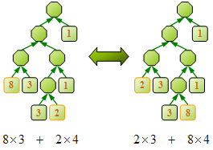

Data Compression
程度★★ 難度★★
碼（Code）
將原本的資訊，以特別的代號來表示，這些代號即稱做「碼」，或稱「代碼」。
99，3qㄋ姑力i讀豬，偶會+ Uㄉ！ 口以ㄇ？ㄅ口以！
碼的用途是把原本的資訊替換成代號，用代號來表示原本的資訊。只要知道每種代號的意義，就能以代號來獲知原本的資訊。
二元碼（Binary Code）
電腦進行儲存和運算，都是使用二進位體制。想讓電腦儲存和運算資料，必須先將資料轉換成二進位字串；換句話說，就是以二進位字串來代表資料。這些二進位字串就是碼。二進位字串所構成的碼，可直接稱作「二元碼」、「二進位碼」。
在電腦中，要將英文轉換成二元碼，是參照「美國資訊交換標準碼（ASCII, American Standard Code for Information Interchange）」所列出的二元碼。ASCII的設計理念是：拆散英文文字，成為單獨的字母、句逗、特殊符號，讓各種不同的字符都有其固定的二元碼。
例如英文字母a會變成二元碼01100001，符號=會變成二元碼00111101。
在電腦中，要將中文轉換成二元碼，則有「大五碼（Big5）」，以及近幾年才推出的「萬國碼（Unicode）」。各位若有興趣，可以自行查一查這些東西的歷史、原理。
碼表（Code Table）
資訊與碼的對照表。例如ASCII Table就是一個碼表。
編碼（Encode）與解碼（Decode）
編碼就是「資訊轉碼」。解碼就是「碼轉資訊」。編碼與解碼都需要對照碼表，以將資料轉換成碼。
如果對照ASCII Table的話： 編碼 「cat」---> 「011000110110000101110100」 解碼 「011000110110000101110100」---> 「cat」
編碼與解碼的方式有許多種。其中一種最簡潔的方式，是由左到右依序解讀。此為常用的編碼與解碼機制，以下稍作介紹。
編譯二元碼時，從文字左端開始往右掃描，每發現一段文字有其對應的碼，就馬上換成碼，然後繼續掃描下去，讓碼越接越長。
假設對照的表格是ASCII Table。 要編譯英文單字cat， 首先掃到c，把c換成01100011， 然後掃到a，把a換成01100001，並接在剛才的碼之後形成0110001101100001， 接著掃到t，……， 最後英文單字cat會變成二進位碼011000110110000101110100。
解讀二元碼時，從最左邊的bit開始往右掃描，每發現目前掃描出的碼是某段文字對應到的碼，就馬上換成文字，然後繼續掃描下去，讓文字越接越長。
假設對照的表格是ASCII Table。 要解讀011000110110000101110100，首先掃到0，然後掃到1，接著掃到1，……， 當掃到第八個bit時，便發現01100011是字母c的碼，就馬上將這段碼換成c， 然後持續掃瞄下去，最後就得到cat。
然而，由左往右依序解讀最怕遇到某個碼是某個碼的開頭。
例如有兩個字母x、y的碼分別是011、0111。 當要解讀011111...這段碼時， 根據由左往右依序解讀法，會得到011，是x開頭的單字， 而事實上這段碼也可能是y開頭的單字。如此解碼就會產生歧義。
如果用了別種編碼與解碼的方式，就不會有這種問題；如果是由左到右依序解讀，碼表裡就要避免某個碼是某個碼的開頭。
符號（Symbol）
編碼和解碼的時候，資料會被拆開，每段資料分別有其對應的碼。資料被拆開時，可以是單獨的字母、標點符號，也可以是一長串、不等長的文字。為了方便描述、記載，都分別以簡易的「符號」象徵之、標記之。
碼樹（Code Tree）
碼表中所列出的碼，得以樹表示之，稱做「碼樹」，或稱「編碼樹」。令分支們分別代表不同的碼，令一些節點分別代表各個符號。樹根到符號所在節點的路徑，會構成該符號的碼。這顆樹可代表、儲存一組二元碼。
二元碼與二元碼樹（Binary Code v.s Binary Code Tree）
無獨有偶，二元碼樹恰可作為二元碼的模型：令往左的樹枝皆為0、往右的樹枝皆為1，另以一些節點作為符號──樹根到節點的路線，就是該符號的二元碼。
清除所有符號之下的細枝末節，簡化二元碼樹。
只要在二元碼樹上安排好各個符號的位置，就能產生出一組二元碼了，而且保證所有的碼都會相異。
另外，如果某個碼是某個碼的開頭，在二元碼樹中就是指某個節點是某個節點的祖先。
也就是說，如果要避免某個碼是某個碼的開頭，在二元碼樹中則讓符號都集中於葉子即可！是個平易近人的結論！
有了二元碼樹之後，由左到右依序解讀就變得方便多了。解碼只需走訪二元碼樹，遇到葉子時，就依照葉子上的符號來查閱碼表，將碼換成符號。至於編碼，則還是如同以往，需要一一查對碼表，將符號換成碼。
Coding
中文也譯作「編碼」。Coding是指設計一組適當的碼，讓資訊有效率的轉換成碼，讓碼有效的表達資訊。
Coding務求資訊和碼能一一對應，讓編碼與解碼不生歧義。火星文就是一種很不好的Coding方式。
（編按：「寫程式」就是將電腦的「工作資訊」編成「程式碼」。:p）
Data Compression（Source Coding）
前面介紹了一大堆先備知識後，現在終於來到核心主題了。
要壓縮資料量，有個簡單的想法是：把原本的資訊替換成簡短的代號，用簡短的代號來表示原本的資訊。只要知道每種代號的意義，就能以代號來獲知原本的資訊。
如果能找到一種編碼方式，讓碼的總長比資料的總長還要短，就壓縮了資料。（碼表也需儲存。若無碼表，則無法進行編碼與解碼。但以下暫不考慮碼表所佔空間。）
在二元碼樹當中，儘量降低葉子的深度，能讓碼的長度變小；換句話說，就是使之為滿二元樹。
滿二元樹（full binary tree）：每個節點只有零個或兩個孩子的二元樹。 全二元樹（complete binary tree）：每片葉子深度都一致的二元樹。亦屬於滿二元樹。
那還能有更短的方式嗎？改變樹的形狀、符號的位置，然而所有的碼的總長都一樣。恰似已登峰造極，無法更上一層。
科學家不會就這麼就善罷甘休的。他們又想到：在資料裡面有些符號出現比較多次，有些符號出現比較少次。如果讓出現比較多次的符號，有比較短的碼，出現比較少次的符號，有比較長的碼，則可讓編出來的碼總長更短。
數學底子好的人，就想到說可以以符號的出現比率，來計算碼長的平均值和變異數，並令平均值和變異數最小。當然也可以算一些有的沒有的式子。更有甚者發明了information entropy等等的數學模型，就是要證明出編出來的碼真正短。
數學的東西就甭講了。以下文章只討論這種情況：所有符號所象徵的文字，其長度都為一，而且無視碼表所佔的空間。
UVa 283 444 644
Huffman Coding
程度★★ 難度★★
Huffman Coding
Huffman Coding是目前壓縮比率最好的文字壓縮方法。
這篇文章首先會講解Huffman Coding的意義，然後講解Binary Code Tree的性質，以及建立Optimal Binary Code Tree的演算法，最後再講解Huffman Coding是如何設計碼、編碼、解碼的。
以國語文句描述Huffman Coding
Huffman Coding是一種Coding演算法，它根據符號們的出現頻率，設計適當的二元碼，讓編碼所得的總碼長達到最小，也就是各符號的「碼長」乘上「該符號在文中的出現次數」的總和最小，亦等價於各符號的「碼長」乘上「出現比率」的總和最小。
以數學文句描述Huffman Coding
Huffman Coding是一個函數，將(符號,符號的出現比率)這個數對，映至二進位字串。此函數讓所有相對應的「符號的出現比率」乘上「二進位字串的長度」的總和最小。也可以說是考慮符號的出現比率，讓符號的碼長平均值最小。
以資訊學文句描述Huffman Coding
Huffman Coding旨在建立一棵Optimal Binary Code Tree，也就是建立一棵Binary Code Tree，讓成本達到最小。樹上的葉子為符號，葉子的權重為符號的出現次數（或出現比率），樹的成本為所有葉子的「深度」乘上「權重」的總和。
計算一棵Binary Code Tree的成本（分割問題）
觀察Binary Code Tree之後，可以發現：在一棵Binary Code Tree當中，只要兩片葉子深度相同，就可以加總其權重，乘上其共同深度，一起計算成本。
另外還可以發現：一棵Binary Code Tree的成本，與每片葉子的相對深度有絕大關係，但與左右位置無關。
根據觀察，要計算一棵Binary Code Tree的成本，可以試著將深度相同的葉子們做伙合併計算（類似的東西一起算較好算），並依深度來分層計算各層所需的成本（複雜的事情個別算較好算）。這是一個粗略的想法。
接著嘗試精準地分割問題。在一棵Binary Code Tree當中，可以刪除深度相同、且為兄弟的兩片葉子，並合併其權重作為新葉子的權重。可得到關係式：原來的樹的成本 = 刪去葉子後的樹的成本 + 左邊葉子的權重 + 右邊葉子的權重。
一棵滿二元樹，刪除了有兄弟關係的兩片葉子之後，依舊是一顆滿二元樹──和原問題仍舊相似。如此一來，只要逐次刪去葉子，不斷縮小樹，最後就可歸納出答案來。
刪去N-1次就會剩下樹根了，N是一開始的葉子片數。
另外，滿二元樹最深的兩片葉子一定位於同樣的深度，且必有兄弟關係。因此，我們可以每次都刪除最深的兩片葉子，來歸納答案，這樣的規則直觀又易懂。
計算Optimal Binary Code Tree的成本（選擇最佳子問題）
葉子們的權重都確定的情況下，計算一棵形狀不明的Binary Code Tree的成本，且算得的成本要最小。
根據上個段落的遞迴公式，下圖列出了一棵形狀不明的Binary Code Tree，採用不同的刪除方案後，所得到的全部的成本關係式。式子越小，成本就越小。
下圖是其中兩種刪除方案及成本關係式。比較這兩個式子的大小，就知道哪一種刪除方案比較好。子樹的成本還需遞迴歸納，才能知道大小；葉子的成本則顯而易見。
各子樹本身不斷合併之後，最終的總和都相等，只有每次刪除的葉子們會對成本造成影響。推演後可以得出：刪除權重越小的葉子，成本就會越小。
所以，逐次刪除兩片權重最小的葉子，成本會最小──但是還要確保每次刪除的兩片權重最小的葉子，必須位於同樣的深度、且有兄弟關係才行。否則先前的高談闊論皆成了紙上空談。
不論樹的形狀如何，滿二元樹最深的兩片葉子一定位於同樣的深度，且必有兄弟關係。又加上Binary Code Tree可以不受限制地調整葉子的位置，所以只要將權重最小的兩片葉子安排在最深的地方就可以了！
因此，我們可以每次都刪除深度最深、權重最小的兩片葉子，來歸納答案。
計算Optimal Binary Code Tree的成本另解
Binary Code Tree可以不受限制地調整葉子的位置。假設樹的結構固定，現在要調整葉子的位置讓成本最小，可以發現：把權重小、位置淺的葉子，與權重大、位置深的葉子對調，成本會變小。
換句話說，不論樹的結構如何，將權重小的葉子儘量往深處移，將權重的大葉子往淺處移，成本會變小。更明確的說，不論樹的結構如何，讓所有葉子依權重排序後，依序由深到淺安排，成本可達到最小。
滿二元樹最深的兩片葉子一定會有兄弟關係！不管樹長得如何，都可以逐次的排序葉子、逐次地刪除最深的兩片葉子，來歸納答案了！每次刪除的葉子都會是權重最小的兩片葉子！
總結：不管樹的結構如何，將權重最小的葉子安排在最深處，一定讓成本最少。滿二元樹最深的兩片葉子一定一樣高，且有兄弟關係──刪除這兩片葉子，以此分割問題，會得到最佳的成本。
附記：求成本最大者亦與成本最小者同理。
建立Optimal Binary Code Tree
逐次合併兩片權重最小的葉子，直到成為一棵樹即可。其原理等同於逐次刪除一顆樹上權重最小的兩片葉子。
每次刪除兩片葉子，便確立這兩片葉子的深度相等、且有兄弟關係，也確立它們所構成的新葉子會是它們的父親、比他們淺一層。確立樹上所有節點的關係後，便能建出樹。
實作時，用Priority Queue來存放所有的葉子，便能有效率的隨時找出權重最小的兩片葉子。
2N-1個push，2N-1個pop，時間複雜度O(NlogN)，N是一開始的葉子片數。
碼長平均值、變異數都最小──減少最佳二元碼樹的深度落差
選合併次數最少的先合併。
N-ary Huffman Tree
讓樹變成滿的，以權重為零的葉子補足。
Optimal Binary Code Tree與Optimal Binary Search Tree的異同
這兩棵樹都是令所有鍵值的「深度」乘上「權重（出現頻率）」的總和最小。
差異在於Optimal Binary Code Tree只有葉子是鍵值，鍵值的位置順序隨意；Optimal Binary Search Tree的所有節點都是鍵值，鍵值的位置需符合鍵值大小順序。
Huffman Coding
拆開資料成為幾段文字，分別替各段文字（符號）設計碼。然後依照符號的出現頻率，建立碼樹以及碼表，之後便可進行編碼與解碼。如此便完成了Coding的工作。
欲拆開資料，最簡單的方式就是拆散成一個個的字母（這裡不討論拆散成長串的字），每個符號都是一個字母、句逗、特殊符號。然後數每種符號的出現次數，建立碼樹及碼表。程式碼的實作技術可以參考下面這篇文獻：
Reza Hashemian. Memory Effieient and High-Speed Search Huffman Coding. IEEE Transactions on Communications, 1995, 43(10), 2576-2581.
【待補程式碼】
Huffman Encoding
直接對照碼表，由左到右依序將文字換成碼，也就是換成二進位字串。
【待補程式碼】
Huffman Decoding
由左往右依序掃描碼，同時也利用碼樹來找出碼所對應的符號。每當發現目前掃描出的碼是某個符號對應到的碼，就馬上查詢碼表，將碼轉換成文字，然後繼續掃描下去。
【待補程式碼】
符號的出現頻率已排序過的Huffman Coding
時間複雜度可降至O(N)。符號的出現頻率已排序過，在二元碼樹當中就是指：一開始的葉子們已照權重順序排好了，我們知道一開始的葉子們的權重順序。
注意到：一、已知一開始的葉子們的權重順序。二、在建樹的過程中，每次都會合併兩片權重最小的葉子；也就是說，每次用來合併的葉子們，會依照權重大小順序出現；也就是說，合併而成的葉子們，也會依照權重大小順序出現。
由於上述兩點原因，每次要合併兩片權重最小的葉子，只有三種情形：一、一開始的葉子們最小的兩片；二、合成的葉子們最小的兩片；三、一開始的葉子們最小的一片，加上合成的葉子們最小的一片。無論是哪種情形，所需時間都僅需時O(1)。
因為已知一開始的葉子們的權重順序，又已知合成的葉子們的權重順序，所以每次要合併兩片權重最小的葉子，僅需時O(1)。合併N-1次就能建好樹，總需時O(N)。
【待補程式碼】
UVa 240 10954
延伸閱讀：Shannon-Fano Coding
剛好與Huffman Coding相反，是Top-down，結果不是最佳的。
Dynamic Huffman Coding（Under Construction!）
程度★★ 難度★★
Dynamic Huffman Coding（Adaptive Huffman Coding）
Hu-Tucker Coding
程度★★ 難度★★★
Alphabetic Binary Code Tree
令樹上的所有符號的大小順序，與其對應的碼的大小順序一致。也就是樹上所有符號由左到右，必須是由小到大。好處是：當資訊已編碼，卻要比較原資訊的大小時，可直接用碼來比大小，而不必解碼。
Hu-Tucker Algorithm
建立Optimal Alphabetic Binary Code Tree的演算法，可參考：http://www.cs.rit.edu/~std3246/thesis/node10.html。
先前在計算Binary Code Tree成本時，是刪除深度相同、且具有兄弟關係的兩片葉子。現在改為只要深度相同即可，不一定要有兄弟關係。可以推得一個類似的關係式：原來的權重值集合 = 新的權重值集合 + 刪除的權重值 + 另一個刪除的權重值。刪除越小的權重值，成本就會越小。
每次刪除兩片葉子，便確立這兩個權重值的深度相等，也確立它們所構成的新權重值比他們淺一層。確立樹上所有節點的關係後，便能建出樹。
但是，由於Optimal Alphabetic Binary Code Tree無法隨意調整葉子的先後順序，讓權重最小的葉子保持深度最深、且有兄弟關係，所以每次都選擇最小的兩個權重值時，有可能無法建成樹。
所以，選擇權重值時，要注意合不合理、能不能建成樹，並儘量選權重值最小的兩個，讓成本儘量最小。要能建成樹，其實只要避免選到的權重值之間，涵蓋到一開始的葉子們即可。
總結
一開始的葉子們，其左右順序是固定的。不斷合併兩個最小的權重值，但是要避免它們倆涵蓋到一開始的葉子們。一起做伙合併的兩個權重值，會有相同的深度；合併後的新權重值，會比做伙合併的那兩個權重值還要淺一層。全部權重值都合併完成，確立了樹上所有節點的深度關係之後，就可建立起Optimal Alphabetic Binary Code Tree。
【待補程式碼】
PKU 1738
Arithmetic Coding（Under Construction!）
程度★★ 難度★★
LZ77（Under Construction!）
程度★★ 難度★★
Burrows-Wheeler Transform
程度★★ 難度★
UVa 632